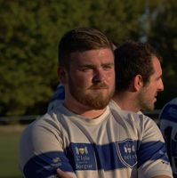

Carte d'identitée
- Gervais
- Yoann
- 24ans
- 13750
- Plan d'Orgon
- 67 route du passages des lanciers
- Téléphone: 06.18.29.69.24
- Mail: yoanngervais.yg13750@gmail.com
Profil
J’ai choisi de passer ces deux dernières années en alternance car je pense qu’acquérir de l’ expérience professionnelle est un plus pour rentrer dans le monde du travail.Je souhaite désormais étendre mon expérience et mon savoir-faire au service d'un acteur majeur dans la maintenance.
Passionné de rugby, très sociable, rigoureux, généreux et toujours à l’écoute d’autrui me permet de m'intégrer et de communiquer sans difficuté avec tout types de personnes.
Diplomes
- BAC STI2D
- BTS MS (option système de production)
- Brevet d'educateur école de rugby
experiences professionnelles
- 2018-2020 : Technitiens de maintenance
- 2020-2021 : Agent de production
- 2023-2024 : Préparateur de commande, Livreur
Loisir
- rugby
- decouverte culturelle